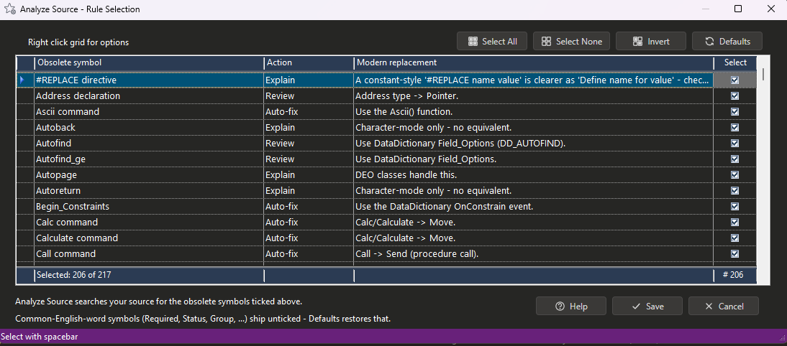

Analyze Source
Analyze Source reads your source files directly and reports obsolete DataFlex commands, functions, classes and symbols. No compile is needed — much of this surface compiles silently, so the compiler never mentions it, and the rest is found here without waiting for a build.
What it finds
- Obsolete commands — Calc, Chain, Cmdline, Gosub, the Type/End_Type buffer family, and the string commands (Left, Mid, Pos, Trim...) that are legacy only in command form.
- Legacy comparisons — EQ, NE, GT, LT, GE, LE, IN and MATCH on an If / Else / While / Until line, plus the two-word If Not form.
- Retired API families — registry and profile-string commands, embedded SQL, database-attribute commands, character-mode UI and printing.
- Obsolete classes — objects declared as DfTimer, Grid, dbGrid, List, dbList, Edit, dbEdit or WinReport, and subclasses of them.
Matching is position-aware — Left(...) as a function is never reported, Left as a command is — and comments and string literals are stripped first.
Starting a scan
- Check on the dashboard — sub-caption "compile + analyze" — scans the source first, then compiles, in one press. It covers the folders picked with Select Folders, or every source folder in the workspace if you picked none, and does not stop to confirm that scope.
- Analyze Source, on the bar carrying Compile, Analyze and Run Plan, runs the source pass alone. It lights when the compiler has nothing left to flag, and to repeat a scan you are already viewing. This one confirms the folders before any work, offering the workspace's AppSrc folder if none are selected.
Within a session a repeat scan re-reads only the files that changed, so later passes are far quicker; a fresh start scans everything again. Cancelling loads nothing: "Analyze Source cancelled - no results loaded."
Choosing what is searched for
Analyze rules opens Analyze Source - Rule Selection. This is the catalogue of everything the scan knows how to look for, and it is worth a look before a first scan — it is also the clearest statement of what DFRefactor considers obsolete.

Each row is one rule:
- Obsolete symbol — the legacy command, function or symbol the rule matches.
- Action — what will happen to a hit. Auto-fix: a converter rewrites it. Review: a converter or report addresses it, but check the result. Explain: no converter exists, so the finding tells you what to do by hand.
- Modern replacement — what to use instead.
- Select — whether the scan looks for it at all. Click the box, or press the spacebar on the current row.
Most rules are Explain or Review rather than Auto-fix, as the sample above shows. That is not a shortfall: a great deal of legacy DataFlex cannot be converted mechanically without deciding something on your behalf, and the scan's job in those cases is to find it and tell you, not to guess.
The foot of the grid keeps a running count — Selected: 206 of 217 in the picture — so you can always see how much of the catalogue is live.
Rules that ship switched off. Eleven rules start unticked. Most are symbols whose names are ordinary English words — Required, Retain, Status, Group, Fill, Points, Suppress, Thousands — which would match far too much perfectly good code. The rest are context-dependent: FindErr, LastErr and Windowindex are legitimate in code that has not been migrated yet, so reporting every occurrence would bury the findings that matter. Tick them when you are ready to deal with that class specifically.
Saving. Select All, Select None, Invert and Defaults only re-tick the grid in front of you — nothing is stored until you press Save, and Cancel leaves your selection as it was. Defaults restores the shipped selection, unticked rules included. Changing the selection makes the next scan re-read every file, since the cached results no longer answer the question you are now asking.
The findings
They land in the Analyzer tab beside the compiler's messages — see Modernization Analyzer — marked DS and a number in the Msg# column, with the same Fix, Suggested fix and Refactor function columns.
Analyze Source changes nothing itself; fixes are applied by the plan you build from Run Plan. Some fixes unlock others, so expect to scan, plan and scan again until nothing actionable is left. See Refactoring Functions.